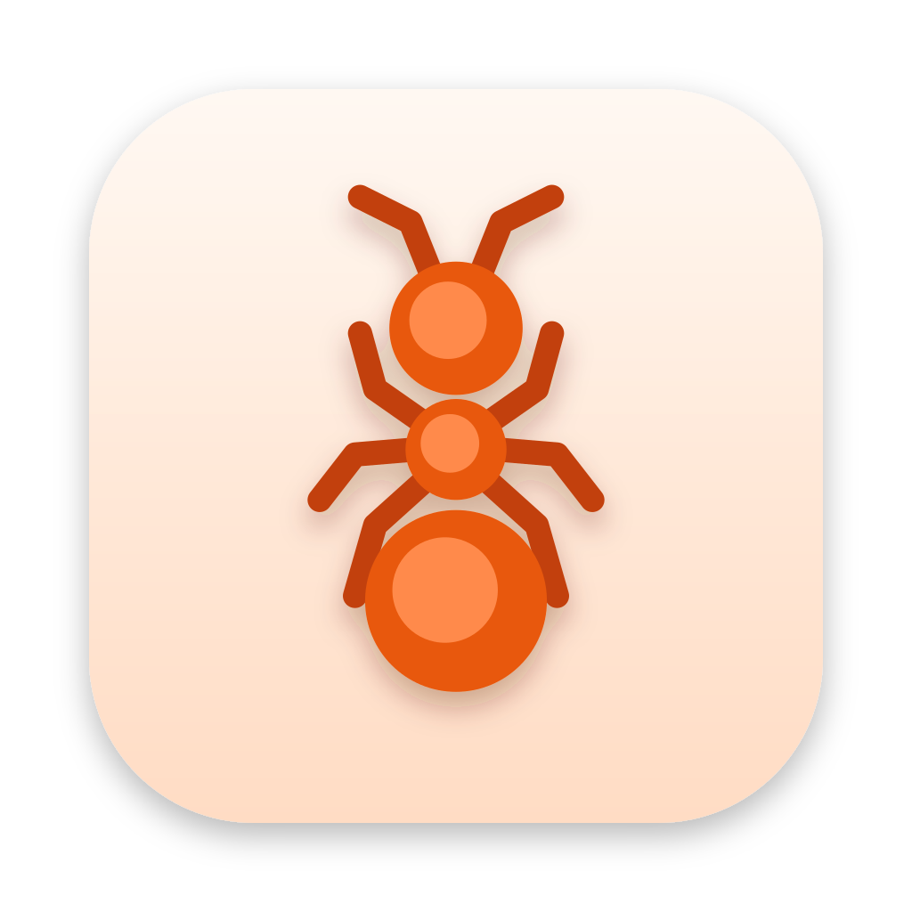
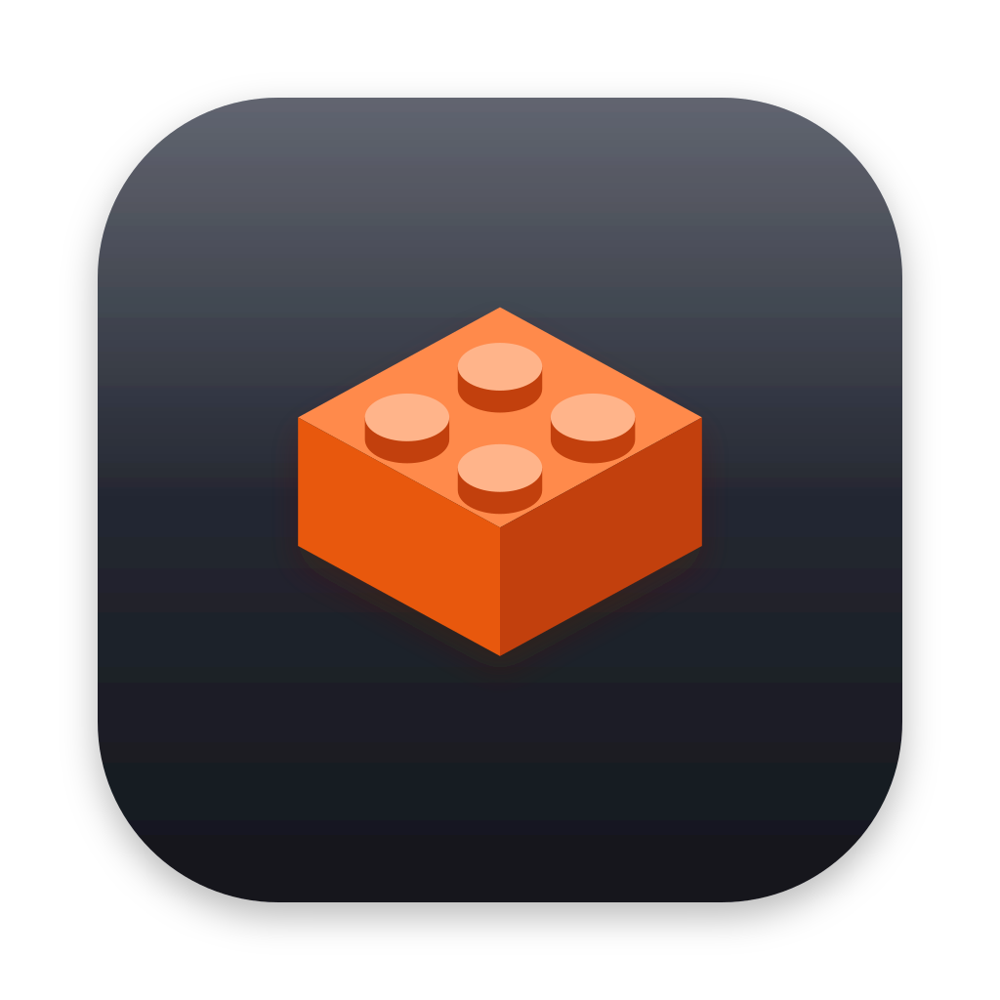
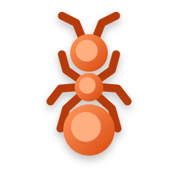
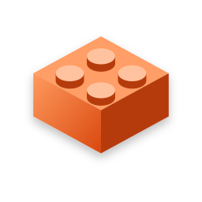

Emmet brand starter
A draft for session 2A, for Barry to react to before 2B freezes it. Full name Emmet Builder, short name Emmet (D-30). The brand story is the word itself: "emmet" is an old English word for ant, a small builder of big things. Two marks to choose from, each with its wordmarks and app icons. Draft caveats: the wordmarks set the name in the system font; the final needs a chosen typeface, outlined to paths. The icons are SVG drafts; the shipped ones need hand-tuned art at 16 and 32 px.
Recommendation: the ant (b). It's ownable where a 2 x 2 brick isn't: every brick tool has a brick, and only Emmet has a name that means ant. The three studs keep the brick idea, so it still says "real parts" at a glance, and it gives the app a character for empty states and tips without a mascot. The brick (a) is safer at 16 px, so the ant's smallest sizes need the most care in 2B.
1. The marks
(a) The brick, cleaned up
The plan's isometric 2 x 2 glyph without outlines: three flat faces, four studs, no tile.
(b) The ant, made of studs
Seen from above: head, thorax, and abdomen are three studs in a row, with elbowed antennae and six legs.
(a) on dark
(b) on dark
2. Wordmarks
Light
Dark
"Emmet Builder" is for the website, the installer, the About window, and the PDF cover; "Emmet" is for the menu bar, the window title, the Dock and Start menu, and anywhere space is short. "Builder" is set lighter and in the accent, so the short name stays the one people say.
3. App icons
macOS: Apple's icon grid (an 824 body on 1024), with depth

160643216
160643216Windows: Fluent style, the shape itself, no tile

256 (shown at 128)48322416
256 (shown at 128)48322416The macOS ant sits on a warm cream body so it reads as friendly beside other apps; the brick keeps the plan's graphite tile. On Windows, the 16 and 24 px sizes need their own simplified art in 2B (the ant's legs merge below 24 px).
4. Palette
The brand orange is the plan glyph's #E8590C, with its light and deep shades. Text never uses the raw orange: --fg-accent and --fill-accent are the shades that pass AA. Warm neutrals instead of the red and yellow that would read as another brand's.
Contrast on the main surfaces (computed here from palette.css)
node scripts/contrast-check.mjs checks every pair in palette.css: text 4.5:1, icons, controls, and fills 3:1, and text on the accent fill 4.5:1.
5. The trademark line, and where it goes
The exact line from TRADEMARKS.md, always in full, never shortened, and the only place Emmet's app, site, and instructions use the word (D-30):
LEGO® is a trademark of the LEGO Group, which does not sponsor, authorize, or endorse this software.
The About window
The website footer
emmetbuilder.com, on every page (7A).
The README
A "Trademarks" section at the end, linking TRADEMARKS.md, with the same line.
The PDF instructions' back page
The small print at the foot of the back page (4E), beside the parts credits and the LDraw attribution.
6. Do and don't (D-30)
Do
- Say "brick", "brick models", and "real parts".
- Tell the ant story: a small builder of big things.
- Use the orange with warm neutrals and the system fonts.
- Keep the trademark line to the places above.
Don't
- Evoke The LEGO Movie: no "Brickowski", "Master Builder", "Everything is awesome", or "the Special".
- Use a construction-worker minifig, a hard hat, a hi-vis vest, or a minifig face.
- Pair red and yellow, or use rounded white-outlined lettering.
- Say LEGO anywhere but the trademark line.